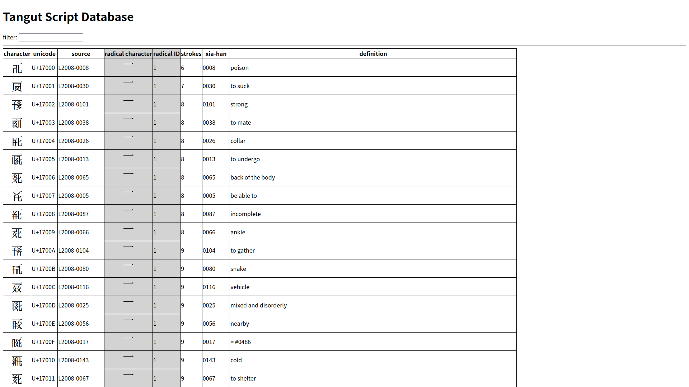

Uwasaki TSUDE's
Official Website
Back to Home
Tangut Script Database
Entity

Click to move page
Data
Title
Tangut Script Database
Date
2025/03/11
Type
Webpage
Comment
西夏文字を検索するための簡易的なWebページです。
Back to Home